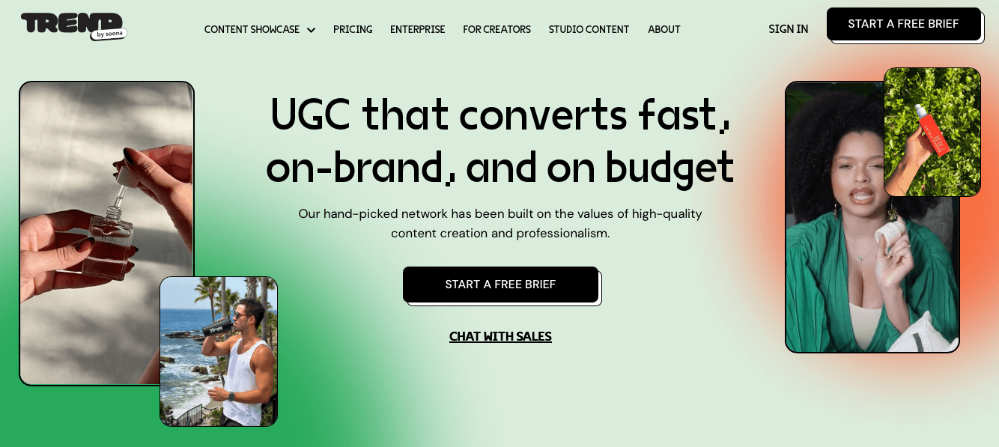

Trend.io is a solid platform for custom creator content — but it's built around a specific use case: commissioning product-specific videos from vetted creators in real-world locations. When that model doesn't fit your timeline, budget, or testing cadence, these four alternatives cover the same ground with different trade-offs. Whether you need instant clip access, influencer posting, or fully managed production, here's what each option delivers.
The Trend.io model works well for brands with budget, time, and a clear need for custom product-specific content. But three friction points consistently push brands to look elsewhere:

UGCDrop is the strongest Trend.io alternative for performance marketers who need real human UGC at high volume and low cost. Instead of commissioning custom videos and waiting for delivery, UGCDrop gives instant access to a 100,000+ pre-filmed clip library — searchable by emotion, age, gender, setting, and clothing. Download 30 clips in minutes for $28/month. No shipping, no briefing, no waiting, no batch minimums.
The key trade-off versus Trend.io: UGCDrop's clips are pre-filmed, so your specific product won't appear on-screen. What you get instead is the largest searchable library of real human reactions, hooks, and lifestyle footage available — ideal for testing emotional angles and hook concepts before investing in product-specific production.
Insense is the strongest Trend.io alternative when you need more than downloadable content — specifically, when you need content posted to creator accounts as TikTok Spark Ads or Meta Partnership Ads. With 80,000+ creators across 35+ countries and an integrated influencer outreach tool covering 7M+ creators, Insense handles the full creator marketing stack from content production to paid amplification.
The cost structure is higher than Trend.io: $500–800/month platform fee plus separate creator payments plus a 7–20% marketplace fee. But for brands running coordinated multi-channel campaigns across TikTok Shop, affiliate, product seeding, and paid social — Insense consolidates tools that would otherwise require three separate platforms.
Minisocial is a fully-managed micro-influencer platform that combines licensed UGC production with organic posting reach — making it a genuine alternative to Trend.io for brands that want content AND creator audiences. The $3,000 project minimum covers 10 creators with all fees included, no negotiation, and no product loss risk. Every creator posts to their Instagram or TikTok audience, giving brands authentic earned media alongside licensed assets.
The all-in $300/creator pricing is higher than Trend.io's scale rates but eliminates the separate fee layers that Insense requires. For brands running 1–2 major campaigns per quarter with a clear budget, Minisocial's project-based model with no long-term contracts is a clean alternative.
Billo is the most data-sophisticated Trend.io alternative — built on performance insights from 326,000+ ads and $500M in attributed purchase value. Its CreativeOps feature generates data-led briefs, matches brands with performance-ranked creators, and produces ad variations from existing footage. The Partnership Hub adds organic posting and Spark Ads directly from creator handles — a layer Trend.io doesn't offer.
Billo doesn't publish pricing and requires a demo call, making it less suitable for teams that need immediate self-serve access. But for brands spending $20k+/month on paid creative that want performance data driving every brief and creator selection, Billo's analytics advantage over Trend.io is meaningful.
| Platform | Entry Cost | Cost Per Video | Turnaround | Organic Posting |
|---|---|---|---|---|
| UGCDrop | $28/month | $0.93/clip | Instant | No |
| Insense | $500/mo + fees | $50–200+ | 14 days | Yes |
| Minisocial | $3,000/project | $300/creator | 14–21 days | Yes |
| Billo | Custom (demo) | Unknown | 7–14 days | Yes |
| Trend.io | $550/batch | $69–92/video | 7–21 days | No |

No batch minimums, no 21-day wait, no product shipping. Download 30 real human clips today for what Trend.io charges for a third of a single video.
Start Sourcing Free